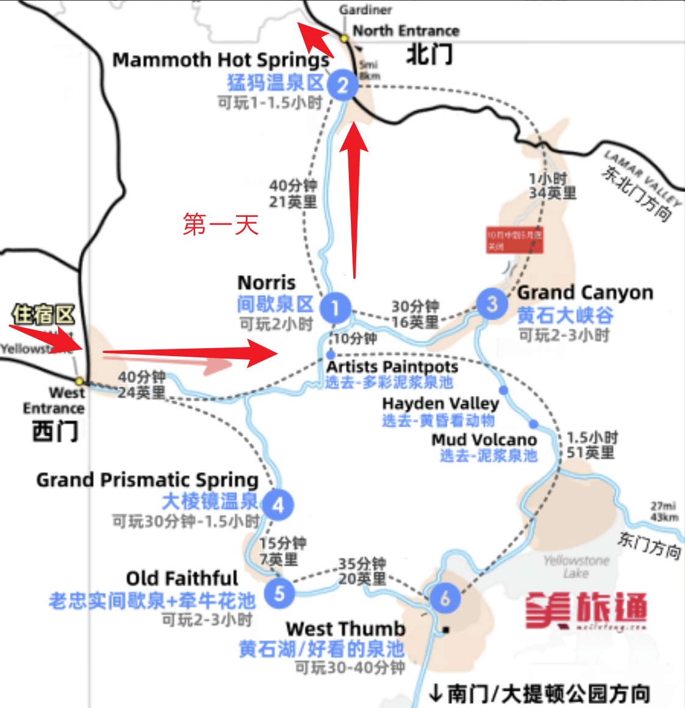
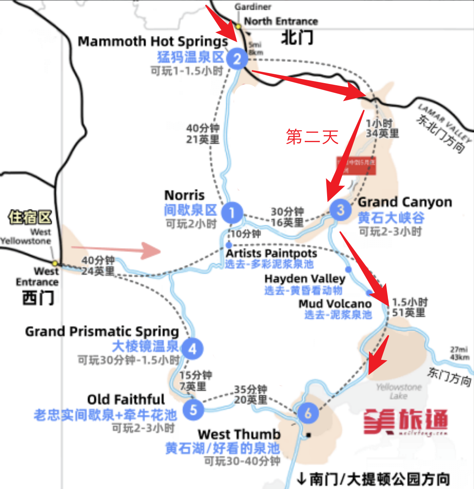
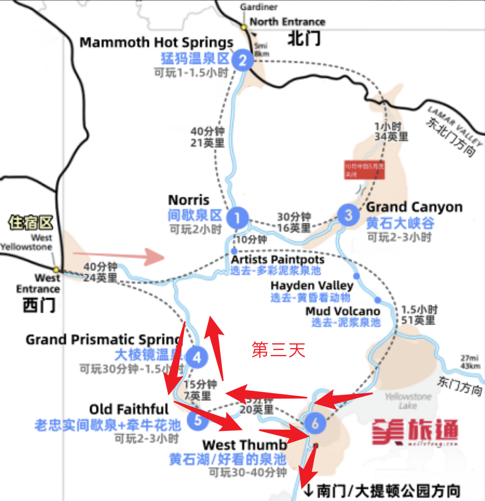
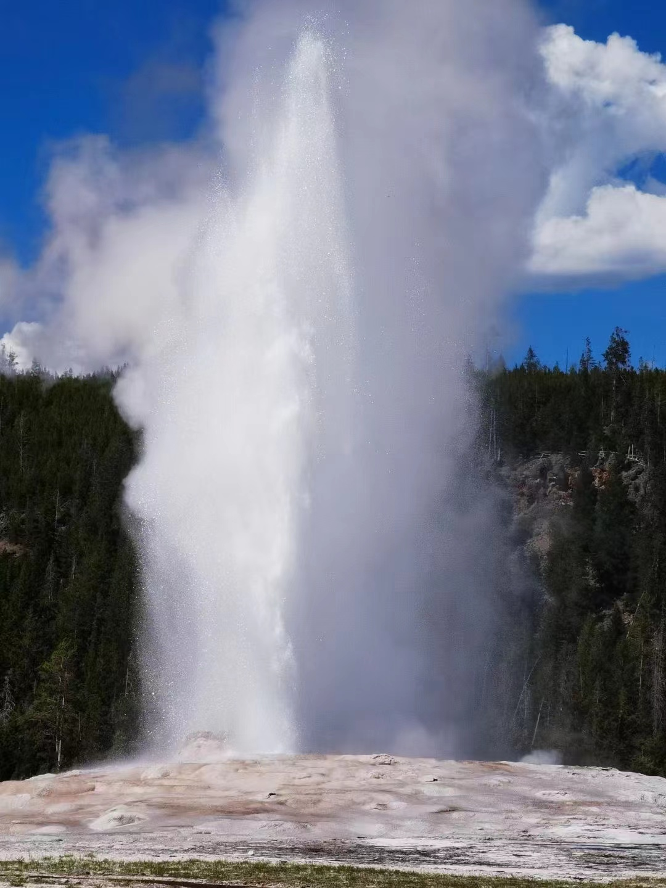
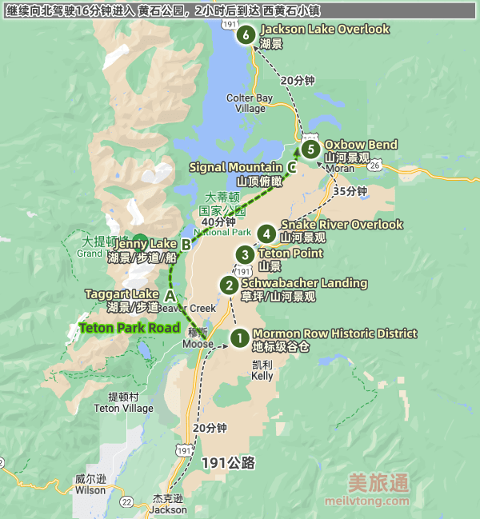

yellowstoneaug
机票
8.11，SNA→SLC，7：00-10：00am，Delta，
8.16，SLC→SNA，5：00-6：00pm，Delta
住宿
黄石的住宿，地址：4138 Huckleberry Lane 2, Island Park, ID 83429, United States
大提顿的住宿，地址：3827 Swan Valley Highway The cottage unit, Irwin, ID 83428, United States
第一天 | 8.11
【7：05 AM - 10：04 AM】飞机到达盐湖城，salt lake city international airport
落地租车，恰午饭，超市购置基本物品啥的
🚗5h
到达住宿的地方
恰晚饭，玩桌游
住宿：4138 Huckleberry Lane 2, Island Park, ID 83429, United States
第二天 | 8.12

🚗1h10min（住宿地-norris，从西门进）
Norris Geyser Basin
在清晨可以看到带雾气的Norris Geyser Basin。清晨的低气温与滚滚热泉的交汇，才酝酿出诺里斯盆地的仙气袅袅。但等大太阳出来之后，仙气就会随之消散。
午饭待定
🚗40min（norris-Mammoth）
Mammoth Hot Springs

🚗30min（Mammoth-Tower-Roosevelt）
Tower-Roosevelt
在北环的东北角，从mammoth开过去30min，结束了开回住宿地2小时，嫌远可以不去
Tower Fall 瀑布，40米高，需要徒步前往从停车场出发，往返1.4千米，落差94米，难度低，老少皆宜
Larmar Valley（需要绕路折返）
如果从东北入口方向来， 可以在 Larmar Valley 的公路边停下，会看到很多很多的 Bison（清晨和黄昏最多）
🚗2h（Tower-Roosevelt-住宿）
第三天 | 8.13

注意北门和东北门都暂时还没开放
黄石大峡谷的北面是草原，清晨和傍晚动物尤其多，可以早起开过去看动物。或者前一天mammoth结束的时候傍晚逛一圈
🚗1h20min（住宿-Grand Canyon）
Grand Canyon

艺术家点 Artist Point
和大峡谷拍照的最佳地点。在上方观景台从左右两个方向观赏峡谷，有一定概率看到额鹗、乌鸦和燕子。

Brink of Upper Fall
0.3mile的trail，8分钟，有一定概率看到彩虹。水量惊人，容易被水雾糊一脸
通往上瀑布的路很好走，您可以到达两个观景台。上瀑布的落差是 109 英尺 (33 米) ，水流从突出的火山岩上倾泻而下。在瀑布的上游，您可以看到老峡谷大桥 (Canyon Bridge) ，如今构成北缘步行道 (North Rim Trail) 的一部分。从左侧观景台俯瞰下游，可以看到峡谷对面的水晶瀑布 (Crystal Falls) 。
Uncle Tom’s Trail
观景点，近距离看瀑布，trail往返0.7mile，约30min，三百多阶长台阶
这条步行道会耗费很多的体力， 有心肺功能障碍或其他健康问题的游人最好不要走。
Brink of the Lower Falls
观景点，近距离看瀑布，trail往返0.8mile，约40min，步道比较陡峭

Lookout Point and Red Rock Point
距离停车场挺近，稍微远一点看瀑布.
Lookout Point：想要看下瀑布（LowerFalls）全景，找到眺望点（LookoutPoint）标牌处的步行道起点，走到分岔时左转。
Red Rock Trail：下方的红岩步行道（RedRockTrail），距离下瀑布的更近，更使人震撼。要从停车场到达这条步行道，可在分岔处右转。该步行道有许多级台阶，在约0.38mile处下降500ft。有一定概率可以看到彩虹

还有一堆的trail，可以参考步道指南或者AllTrails
Hayden Valley
公路旁的一片草地，但在黎明/黄昏时常能看到美洲野牛等动物
🚗16min
Mud Volcano
可以用40分钟，走0.8英里长的环形步道，观赏形状/颜色不一的泥浆池
泥浆温度约93摄氏度，不建议呼吸道敏感人群前往
🚗1h30min
第四天 | 8.14

大棱镜温泉 Grand Prismatic Spring —— 60min
近距离看：停车后走木质步道观赏大棱镜，约需10-30分钟（找停车位费时）
看全景：如果想看全景，需要向南驾车5分钟到 Fairy Falls Trailhead 的停车场（车位很少），然后走 Grand Prismatic Overlook Trail 到山上的观景点，往返约需1小时
大棱镜在中午的时候颜色最鲜艳，要等雾气散开拍出来才好看！

老忠实喷泉 Old Faithful —— 60min
每隔约90分钟喷发一次，每次历时约4分钟。
需要提前10-15分钟就去等待，有提前喷发的可能。
要坐在上风向，这样才不会在喷发的时候，被高高充起的雾气遮住视线。

午饭：老忠实旅馆餐厅（Old Faithful Inn Dining Room）
牵牛花池 Morning Glory
从 老忠实 徒步前往 牵牛花池，往返约需1.5小时，路上还有多个温泉/间歇泉可观赏

Sapphire Pool
在从 大棱镜 前往 老忠实 的路上，可以在 Biscuit Basin 稍作停留，观赏 Sapphire Pool

西拇指间歇泉盆地 West Thumb Geyser Basin
景区内有大大小小的温泉池若干，用30-40分钟，走环形木质步道观赏

回住宿点的时候可以顿老忠实的日落，晚饭也可以那边解决
第五天 | 8.15
🚗2h30min
南门出，去大提顿玩一天到半天（我们从北往南走），景点见下图

🚗1h30min
住宿：3827 Swan Valley Highway The cottage unit, Irwin, ID 83428, United States
第六天 | 8.16
早上赶路去盐湖城
🚗4h（民宿→机场）
盐湖城玩一天，能玩几个就算几个，注意时间别误机
Utah State Capitol 犹他州议会大厦
大盐湖 The Great Salt Lake：15刀，貌似有臭味
天空之镜 Bonneville Salt Flats State Park：夏天去只能看到干的盐层
Ensign Peak Park：30分钟的小trail，可以爬上去看日落+盐湖城全景
下午5：10pm的飞机
晚饭回尔湾吃
附录
常见动物出没地
- Fishing Bridge: Grizzly bears
- Hayden Valley: Bison, black bears, elk, grizzly bears, wolves
- Lamar Valley: Bison, black bears, bighorn sheep, elk, grizzly bears, mule deer, pronghorn, wolves
- Mammoth Hot Springs: Bison, black bears, elk, mule deer
- Madison: Bison, elk
- North Entrance: Bighorn sheep, bison, elk, pronghorn
- Northeast Entrance: Moose
- Old Faithful: Bison, elk
- South Entrance: Moose
- West Thumb: Elk, moose
动物在Mammoth Hot Springs and the Northeast Entrance
注意事项
1，携带防熊喷雾
行李准备
攻略 | 黄石
地图：Yellowstone National Park Area Maps
门票：可提前订购，35美元一车，七日通票，建议买国家公园的年票
攻略：黄石国家公园攻略
攻略 | 大提顿
门票：直接用国家公园通票
攻略：大提顿国家公园攻略
攻略 | 盐湖城
攻略：盐湖城攻略
预算
机票：257.2/人
住宿：398.2575/人
租车+油费：150.8325/人 + ？
恰饭：？
其他：？